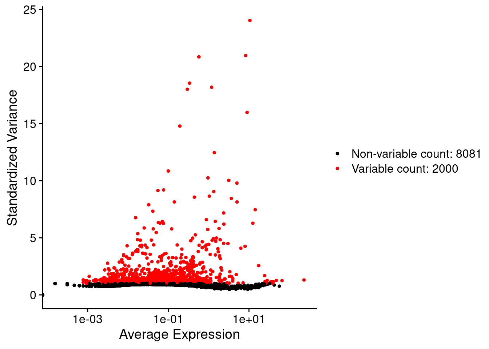
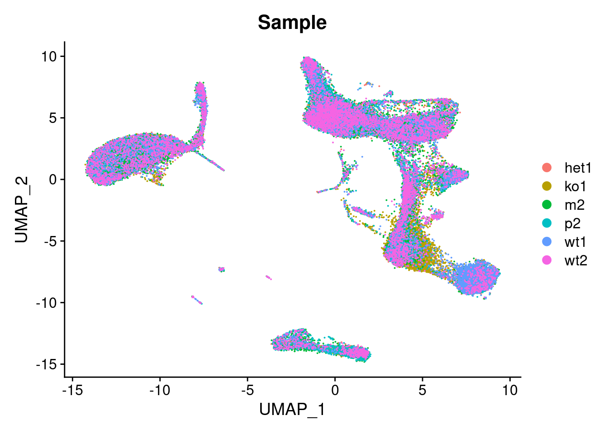
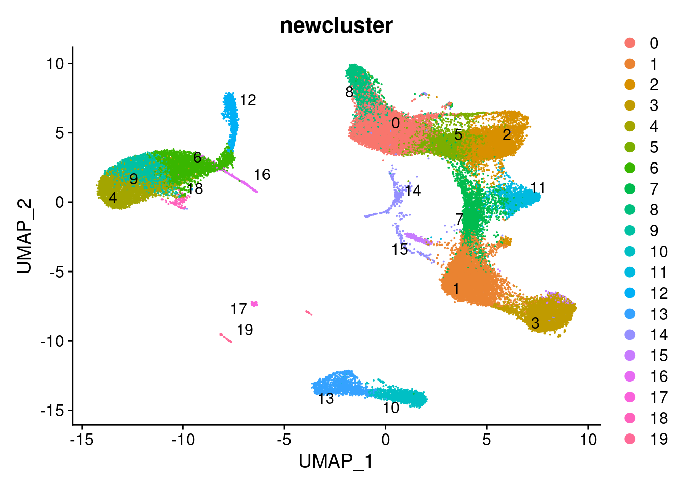
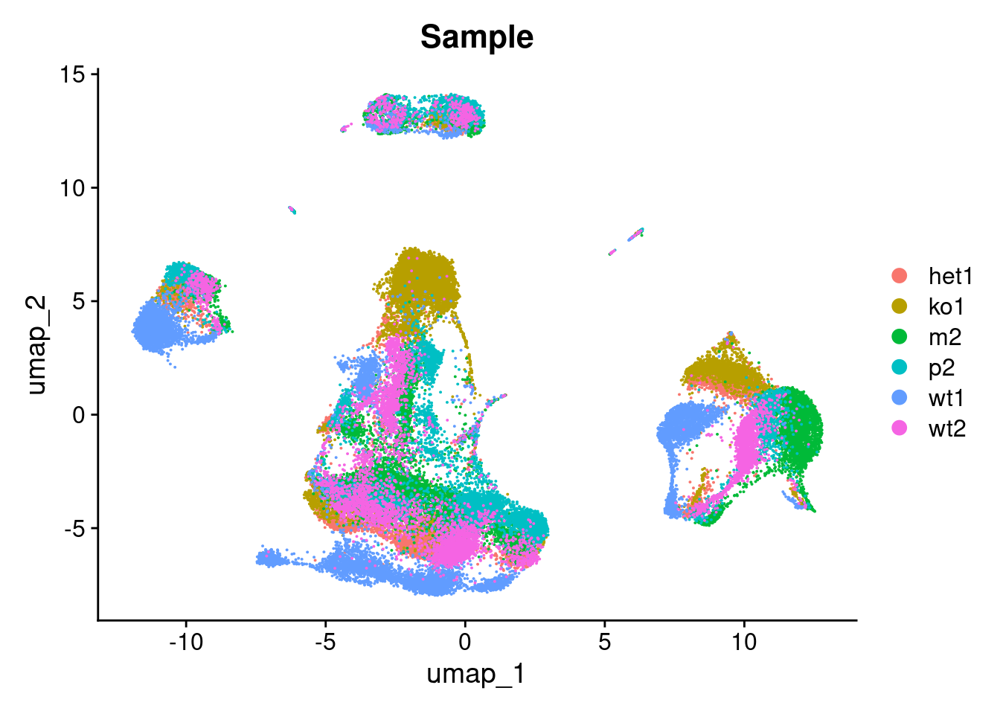
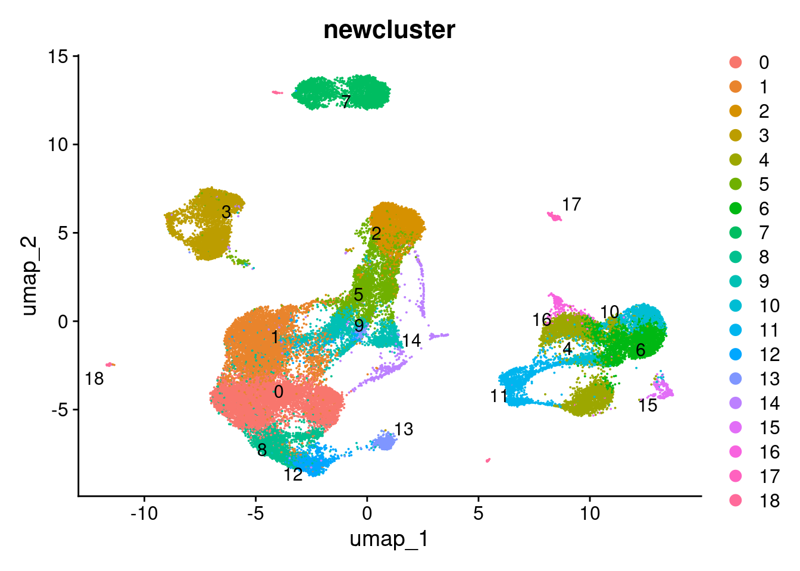

Last updated: 2021-01-07
Checks: 7 0
Knit directory: project-scrnaseq-integration-comparison/
This reproducible R Markdown analysis was created with workflowr (version 1.6.2). The Checks tab describes the reproducibility checks that were applied when the results were created. The Past versions tab lists the development history.
Great! Since the R Markdown file has been committed to the Git repository, you know the exact version of the code that produced these results.
Great job! The global environment was empty. Objects defined in the global environment can affect the analysis in your R Markdown file in unknown ways. For reproduciblity it’s best to always run the code in an empty environment.
The command set.seed(20210107) was run prior to running the code in the R Markdown file. Setting a seed ensures that any results that rely on randomness, e.g. subsampling or permutations, are reproducible.
Great job! Recording the operating system, R version, and package versions is critical for reproducibility.
Nice! There were no cached chunks for this analysis, so you can be confident that you successfully produced the results during this run.
Great job! Using relative paths to the files within your workflowr project makes it easier to run your code on other machines.
Great! You are using Git for version control. Tracking code development and connecting the code version to the results is critical for reproducibility.
The results in this page were generated with repository version c076603. See the Past versions tab to see a history of the changes made to the R Markdown and HTML files.
Note that you need to be careful to ensure that all relevant files for the analysis have been committed to Git prior to generating the results (you can use wflow_publish or wflow_git_commit). workflowr only checks the R Markdown file, but you know if there are other scripts or data files that it depends on. Below is the status of the Git repository when the results were generated:
working directory clean
Note that any generated files, e.g. HTML, png, CSS, etc., are not included in this status report because it is ok for generated content to have uncommitted changes.
These are the previous versions of the repository in which changes were made to the R Markdown (analysis/analysiswithseurat.Rmd) and HTML (docs/analysiswithseurat.html) files. If you’ve configured a remote Git repository (see ?wflow_git_remote), click on the hyperlinks in the table below to view the files as they were in that past version.
| File | Version | Author | Date | Message |
|---|---|---|---|---|
| Rmd | 751203d | jeprob | 2021-01-07 | .gitignore + Rmd |
Dataset preprocessing and integration was adapted from this vignette by the developers of Seurat. Furthermore this tutorial for pbmcs was followed for cell clustering.
library(dplyr)
library(ggplot2)
library(Seurat)
library(cowplot)
library(SeuratDisk)
library(SeuratData)data_pbmc <- readRDS("./data/wonglab_10x_XLP2_sce_after_scDblFinder.rds")
data_pbmcclass: SingleCellExperiment
dim: 10081 46299
metadata(2): Samples scDblFinder.stats
assays(2): counts logcounts
rownames(10081): ENSG00000237491.AL669831.5 ENSG00000230368.FAM41C ...
ENSG00000198727.MT-CYB ENSG00000273748.AL592183.1
rowData names(3): ID Symbol Type
colnames(46299): het1.AAACCTGAGATGTTAG-1 het1.AAACCTGAGGTGGGTT-1 ...
wt2.TTTGTCATCGCCGTGA-1 wt2.TTTGTCATCTTGACGA-1
colData names(28): Sample Barcode ... scDblFinder.originAmbiguous
cluster
reducedDimNames(2): PCA UMAP
altExpNames(0):head(counts(data_pbmc))6 x 46299 sparse Matrix of class "dgCMatrix"
ENSG00000237491.AL669831.5 . . . . . . . . . . . . . . . . . . . . . . . . . .
ENSG00000230368.FAM41C . . . . . . . . . . . . . . . . . . . . . . . . . .
ENSG00000188976.NOC2L 1 . 1 . . . . . . . . . . . 1 . 1 . . . . . . . . .
ENSG00000188290.HES4 . . . . . . 2 . . . . . . . . . . . . . . . . . . .
ENSG00000187608.ISG15 . 1 . . . . 6 . . . 1 . . . . 1 . . . . . 1 . . . .
ENSG00000186891.TNFRSF18 . . . . . . . . . . . . . . . . . . . . . . . . . .
ENSG00000237491.AL669831.5 . . . . . . . . ......
ENSG00000230368.FAM41C . . . . . . . . ......
ENSG00000188976.NOC2L 1 2 . . . . 1 . ......
ENSG00000188290.HES4 . . . . . . . . ......
ENSG00000187608.ISG15 . . . . . . . . ......
ENSG00000186891.TNFRSF18 . . . . . . . . ......
.....suppressing 46265 columns in show(); maybe adjust 'options(max.print= *, width = *)'
..............................#Set up Seurat object
pbmc <- as.Seurat(x = data_pbmc)
# pbmc <- Seurat::NormalizeData(pbmc, verbose=FALSE)
#Split the seurat object into individual datasets divided by Sample (in metadata)
pbmc.list <- SplitObject(pbmc, split.by = 'Sample')
#Identify variable features with variance stabilizing transformation (feature selection) for each dataset
for (i in 1:length(pbmc.list)) {
pbmc.list[[i]] <- NormalizeData(pbmc.list[[i]]) %>% FindVariableFeatures(selection.method = "vst", nfeatures = 2000, verbose = FALSE) %>% ScaleData()
}
#just for visualization purposes:
#Identify the 1000 most highly variable genes from 1st dataset and plot variable features with and without labels
top1000 <- head(VariableFeatures(pbmc.list[[1]]), 1000)
plot1 <- VariableFeaturePlot(pbmc.list[[1]])
plot1  One can see in the plot that the 2000 most variable features chosen by the VariableFeatures function are actually the ones displaying the highest standardized variance.
#Find anchors between individual datasets to construct a reference
pbmc.anchors <- FindIntegrationAnchors(pbmc.list, dims=1:30)
#Integrate data (batch corrected expression matrix)
pbmc.integrated <- IntegrateData(anchorset=pbmc.anchors, dims=1:30)
#save and reload data
# SaveH5Seurat(pbmc.integrated, 'integrated_seurat', overwrite = FALSE, verbose = TRUE)
# pbmc.integrated <- LoadH5Seurat("../integrated_seurat.h5Seurat")In the last iteration of the FindIntegrationAnchors function 17359 anchors were found and 7623 anchors retained, to use for integration.
For comparison we perform the same UMAP and Nearest Neighbor analyses with the embeddings from the Seurat batch corrected gene expression matrix (integrated datasets) and the uncorrected initial PC embeddings (original datasets).
We start with the analysis of the integrated dataset:  We an see that the data is well integrated, and cells do not cluster by dataset in the UMAP space.
Now we aim to identify different clusters from the integrated dataset in the UMAP embedding.
#find clusters
pbmc.integrated <- FindNeighbors(pbmc.integrated, dims = 1:10)
pbmc.integrated <- FindClusters(pbmc.integrated, resolution = 0.8)Modularity Optimizer version 1.3.0 by Ludo Waltman and Nees Jan van Eck
Number of nodes: 46299
Number of edges: 1506510
Running Louvain algorithm...
Maximum modularity in 10 random starts: 0.8992
Number of communities: 20
Elapsed time: 21 secondshead(Idents(pbmc.integrated), 5)het1.AAACCTGAGATGTTAG-1 het1.AAACCTGAGGTGGGTT-1 het1.AAACCTGAGTGGGTTG-1
1 13 3
het1.AAACCTGAGTGTCTCA-1 het1.AAACCTGCAAGTTGTC-1
0 0
Levels: 0 1 2 3 4 5 6 7 8 9 10 11 12 13 14 15 16 17 18 19pbmc.integrated$newcluster <- as.factor(Idents(pbmc.integrated))
#plot by cluster
p2 <- DimPlot(pbmc.integrated, reduction = "umap", group.by = "newcluster", label = TRUE, repel = TRUE)
p2 We find 20 clusters identified from the Seurat integrated embeddings.
Now we run the same analysis for the original dataset without integration. The only thing that changes is that one first has to find variable features on the whole unprocessed dataset, which had already been done for the integrated dataset.
#standard workflow for visualization
pbmc <- FindVariableFeatures(pbmc, nfeatues=2000)
pbmc <- ScaleData(pbmc, verbose = FALSE)
pbmc <- RunPCA(pbmc, npcs = 30, verbose = FALSE)
pbmc <- RunUMAP(pbmc, reduction = "pca", dims = 1:30)
p1_bef <- DimPlot(pbmc, reduction = "umap", group.by = "Sample")
p1_bef We see, that the original dataset is not well integrated and cells cluster by patient (het1 to wt2) in the UMAP plot above.
As previously done, we have a look at the clusters that can be identified from the original unprocessed embeddings in the UMAP space.
#find clusters
pbmc <- FindNeighbors(pbmc, dims = 1:10)
pbmc <- FindClusters(pbmc, resolution = 0.8)Modularity Optimizer version 1.3.0 by Ludo Waltman and Nees Jan van Eck
Number of nodes: 46299
Number of edges: 1407226
Running Louvain algorithm...
Maximum modularity in 10 random starts: 0.8901
Number of communities: 19
Elapsed time: 22 secondshead(Idents(pbmc), 5)het1.AAACCTGAGATGTTAG-1 het1.AAACCTGAGGTGGGTT-1 het1.AAACCTGAGTGGGTTG-1
2 7 3
het1.AAACCTGAGTGTCTCA-1 het1.AAACCTGCAAGTTGTC-1
0 0
Levels: 0 1 2 3 4 5 6 7 8 9 10 11 12 13 14 15 16 17 18pbmc$newcluster <- as.factor(Idents(pbmc))
#plot by cluster
p2_bef <- DimPlot(pbmc, reduction = "umap", group.by = "newcluster", label = TRUE, repel = TRUE)
p2_bef We note that in comparison to the 20 identified clusters from the Seurat embedding, only 19 clusters could be recognized from the original UMAP embeddings.
sessionInfo()R version 4.0.3 (2020-10-10)
Platform: x86_64-pc-linux-gnu (64-bit)
Running under: Ubuntu 20.04.1 LTS
Matrix products: default
BLAS: /usr/lib/x86_64-linux-gnu/blas/libblas.so.3.9.0
LAPACK: /usr/lib/x86_64-linux-gnu/lapack/liblapack.so.3.9.0
locale:
[1] LC_CTYPE=en_US.UTF-8 LC_NUMERIC=C
[3] LC_TIME=de_CH.UTF-8 LC_COLLATE=en_US.UTF-8
[5] LC_MONETARY=de_CH.UTF-8 LC_MESSAGES=en_US.UTF-8
[7] LC_PAPER=de_CH.UTF-8 LC_NAME=C
[9] LC_ADDRESS=C LC_TELEPHONE=C
[11] LC_MEASUREMENT=de_CH.UTF-8 LC_IDENTIFICATION=C
attached base packages:
[1] parallel stats4 stats graphics grDevices utils datasets
[8] methods base
other attached packages:
[1] SingleCellExperiment_1.12.0 SummarizedExperiment_1.20.0
[3] Biobase_2.50.0 GenomicRanges_1.42.0
[5] GenomeInfoDb_1.26.2 IRanges_2.24.1
[7] S4Vectors_0.28.1 BiocGenerics_0.36.0
[9] MatrixGenerics_1.2.0 matrixStats_0.57.0
[11] SeuratData_0.2.1 SeuratDisk_0.0.0.9013
[13] cowplot_1.1.1 Seurat_3.2.3
[15] ggplot2_3.3.3 dplyr_1.0.2
[17] workflowr_1.6.2
loaded via a namespace (and not attached):
[1] plyr_1.8.6 igraph_1.2.6 lazyeval_0.2.2
[4] splines_4.0.3 listenv_0.8.0 scattermore_0.7
[7] digest_0.6.27 htmltools_0.5.0 fansi_0.4.1
[10] magrittr_2.0.1 tensor_1.5 cluster_2.1.0
[13] ROCR_1.0-11 globals_0.14.0 colorspace_2.0-0
[16] rappdirs_0.3.1 ggrepel_0.9.0 xfun_0.19
[19] crayon_1.3.4 RCurl_1.98-1.2 jsonlite_1.7.2
[22] spatstat_1.64-1 spatstat.data_1.7-0 survival_3.2-7
[25] zoo_1.8-8 glue_1.4.2 polyclip_1.10-0
[28] gtable_0.3.0 zlibbioc_1.36.0 XVector_0.30.0
[31] leiden_0.3.6 DelayedArray_0.16.0 future.apply_1.7.0
[34] abind_1.4-5 scales_1.1.1 miniUI_0.1.1.1
[37] Rcpp_1.0.5 viridisLite_0.3.0 xtable_1.8-4
[40] reticulate_1.18 bit_4.0.4 rsvd_1.0.3
[43] htmlwidgets_1.5.3 httr_1.4.2 RColorBrewer_1.1-2
[46] ellipsis_0.3.1 ica_1.0-2 pkgconfig_2.0.3
[49] farver_2.0.3 uwot_0.1.10 deldir_0.2-3
[52] tidyselect_1.1.0 labeling_0.4.2 rlang_0.4.10
[55] reshape2_1.4.4 later_1.1.0.1 munsell_0.5.0
[58] tools_4.0.3 cli_2.2.0 generics_0.1.0
[61] ggridges_0.5.2 evaluate_0.14 stringr_1.4.0
[64] fastmap_1.0.1 yaml_2.2.1 goftest_1.2-2
[67] knitr_1.30 bit64_4.0.5 fs_1.5.0
[70] fitdistrplus_1.1-3 purrr_0.3.4 RANN_2.6.1
[73] pbapply_1.4-3 future_1.21.0 nlme_3.1-151
[76] whisker_0.4 mime_0.9 hdf5r_1.3.3
[79] compiler_4.0.3 rstudioapi_0.13 plotly_4.9.2.2
[82] png_0.1-7 spatstat.utils_1.17-0 tibble_3.0.4
[85] stringi_1.5.3 RSpectra_0.16-0 lattice_0.20-41
[88] Matrix_1.3-0 vctrs_0.3.6 pillar_1.4.7
[91] lifecycle_0.2.0 lmtest_0.9-38 RcppAnnoy_0.0.18
[94] data.table_1.13.6 bitops_1.0-6 irlba_2.3.3
[97] httpuv_1.5.4 patchwork_1.1.1 R6_2.5.0
[100] promises_1.1.1 KernSmooth_2.23-18 gridExtra_2.3
[103] parallelly_1.23.0 codetools_0.2-18 MASS_7.3-53
[106] assertthat_0.2.1 rprojroot_2.0.2 withr_2.3.0
[109] sctransform_0.3.2 GenomeInfoDbData_1.2.4 mgcv_1.8-33
[112] grid_4.0.3 rpart_4.1-15 tidyr_1.1.2
[115] rmarkdown_2.6 Rtsne_0.15 git2r_0.27.1
[118] shiny_1.5.0